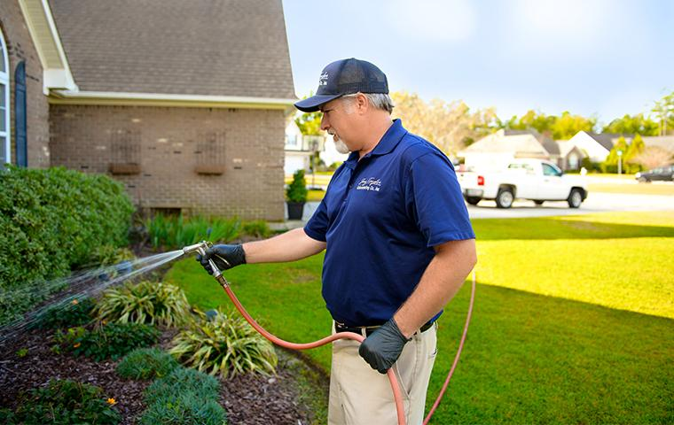

____________
About The Company

_______________
About Us!
Jay Taylor Exterminating has proudly served Wilmington, NC for over 80 years. Founded in 1941 by Jay Taylor Sr., the company has remained a family-owned and operated business for four generations. Today, Jay Taylor IV and Stephen Taylor continue the family tradition, providing high-quality extermination, pest control, termite treatment, and related services to homes and businesses throughout the Wilmington area.
80 Years Of Service
For more than eight decades, Jay Taylor Exterminating has built a reputation for reliability, professionalism, and exceptional customer care. Our family's dedication to the pest control industry is at the heart of everything we do. Every member of our team is committed to delivering the same level of quality service and attention to detail that our customers have trusted for generations.
What does customer service look like at Jay Taylor Exterminating Co.?
- Complete flea control, termite control, bed bug control, and other pest control services
- The complete fulfillment of all customer expectations
- Highly trained technicians
- Quick response time
Local Pest Control Solutions
At Jay Taylor Exterminating, we understand the unique pest challenges faced by residents in Wilmington, NC. Our coastal climate and lush environment create ideal conditions for pests such as termites, mosquitoes, ants, and other seasonal invaders. These pests can damage property, disrupt daily life, and pose potential health risks for families.
We stay informed about local pest management practices and guidelines, including resources provided by the City of Wilmington's Environmental Services. Our team uses this knowledge to develop effective, customized solutions tailored to the specific needs of our community.
From neighborhoods across Wilmington to nearby areas like Wrightsville Beach and Carolina Beach, we are committed to helping homeowners protect what matters most. Whether you are dealing with an active infestation or looking for preventative pest control, our experienced team is here to provide dependable service and lasting peace of mind.